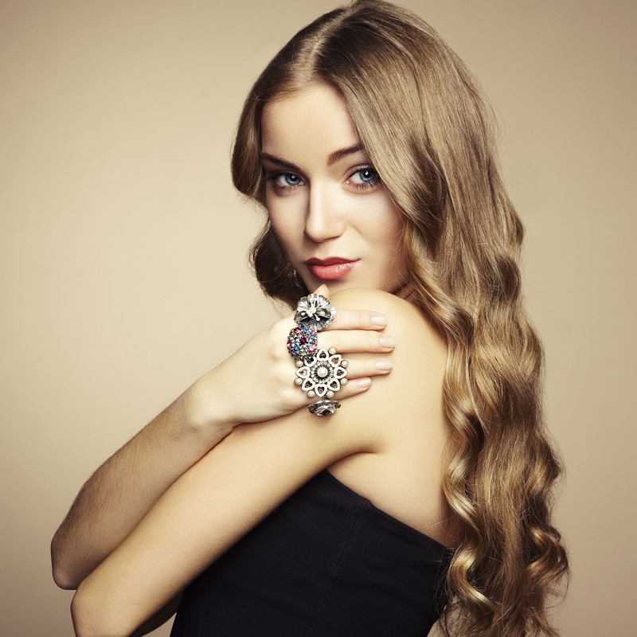

|
400-123-4567 13800000000 |
|
400-123-4567 13800000000 |
黄金领域
黄金项链可以单独佩戴，也可以配上一个吊坠配搭，吊坠按种类的不同可分为钻石吊坠、珍珠吊坠、玉石吊坠、水晶吊坠、碧玺吊坠等。大多情况下，黄金项链的吊坠，以黄金吊坠为主，这也是大多数人的选择。因为无论是项链，还是吊坠，材质如果是黄金，搭配起来就需要一种和谐统一的效果，也更能衬托出购买者华丽高贵的形象。
除了黄金吊坠，钻石吊坠也常用来搭配黄金项链。如果搭配钻石吊坠，展示出来的女性气质和形象相当的与众不同，风情万种。当然，项链本身的长度、粗细、款式，也影响吊坠的选择，在够购买吊坠的时候，一定不能忽视这些问题，也可以选择不同材质、大小、样式的吊坠进行不同的搭配。
另外需要注意一点的是，黄金项链配什么吊坠合适，要将挑选的黄金项链、吊坠与脖子的粗细相搭配以后，还要配以不同的着装风格，才能达到不同的形象效果。如果搭配得当，则可以增加魅力指数，如果搭配不当，则非常不协调，影响个人形象。
项链在搭配上需讲求材质、色彩的和谐，而能与金项链搭配的一样平常是黄金吊坠。黄金吊坠与黄金项链可以或许出现完备的统一性，视觉上也不会给人违和感。固然，在吊坠的巨细上，必要依据本身脖子的粗细水平来抉择哦，脖子较粗较短得当抉择颗粒较小的黄金吊坠，同时项链的长度也应到胸部为好。而脖子修长的女性则没有太大讲求，只需项链和吊坠得当本身的脸型和气质，都可尝试佩带。黄金项链怎么搭配好看。
那么咱们的金项链搭配甚么吊坠悦目 怎样搭配衣服，金项链怎样搭配衣服，第一是金项链+玄色雪纺衫，玄色与金黄色组合是很耐看的色彩组合，用玄色雪纺衫来搭配金项链最适合不过了，在略显爽朗的玄色雪纺衫中，一抹金黄稀释于白净滑嫩的颈部，冲破玄色的爽朗，彰显出主人的知性与沉稳！